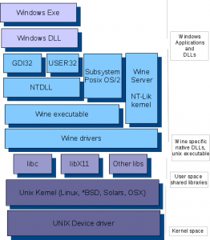

也紀念我們永遠的朋友 李士傑先生（Shih-Chieh Ilya Li）。
Wine – 在 Linux 中使用 Windows 程式
簡介
自從 Wine 1.0 在 2008 年 6 月釋出之後，便開始以兩、三周為週期，開始固定的釋出新版。Wine 是針對 POSIX 相容的作業系統所設計，目前 Wine 已經被移植到許多平臺上，除了 Linux 外，也可以在 Solaris，FreeBSD，x86 版本的 Mac OS 上使用。經過長期的開發與社群支援，目前在 Appdb 中已有超過一萬六千個軟體測試報告，其中有將近 3000 筆是屬於高度可用 (Platinum List) 的軟體。
在 Appdb 中仍有大量的軟體存在執行的問題，造成使用上的困擾，甚至無法使用。這與 Wine 的設計有關，Wine 跟 Dosbox，ZSNES 不同，既不是模擬器，也不是虛擬機器。它是以軟體方式模擬出 Windows 作業系統所需的軟體架構 (Software Stack)，理論上只新增一層 software layer 會比虛擬化成本低廉。
雖然 Wine 計劃經過十幾年發展，但是市面上目前為止沒有任何書籍介紹 Wine 及其程式架構，開發者只能參考少數幾份線上文件與 Wiki 網站上資料來理解 Wine 的程式架構。本文簡單地介紹 Wine 的相關設計。
軟體架構與初始化簡介
根據 Wine Developer's Guide，軟體架構如下：

▲ 圖1
要在 UNIX 中模擬一個 Windows 作業系統，有許多差異需要克服，且 Wine 為了開源授權的合法性，並不對 Windows 本身進行反組譯，而是用黑箱測試法所開發出來，並參照開發文件逐步實做所有的 Win32 APIs。問題在與 Win32 API 文件並沒有完全開放，不同版本作業系統間，也有些微行為上的差異。然而 Windows® 有著為數不少缺乏文件的 APIs，甚至錯誤的 API 反應等等，Wine 都需要一一的實踐。加上仍有一些未開放的低階 API，以及一些缺乏文件的協定或設計，Wine 計劃可以說是以血淚走過來的開發工作。
以 Wine 模擬 Windows 最重要的功能之一就是 Wine server，它基本上是提供作業系統核心模擬的功能，負責 Inter-Process Communication (IPC)，synchronization 與 process/thread management 等等工作。Wine server 是一個獨立的程序，每次啟動任何 Windows 程式前，它會優先被叫起。若出現了什麼問題，也要確保砍掉 (kill) 它後，才能乾淨的重新執行。
而在 Wine preloader 載入 .COM / NE / DLL / PE 前，由於每個程序都將使用自己的記憶體空間，Wine 要先依照不同的執行檔格式需求建立 Memory layout。為了能夠在 Linux 中製造出跟 Win32 一樣的記憶體位置，除了試圖將相關的 DLLs 載到正確的記憶體位置，Wine 也要避免 dynamic linker 預先把 Wine 所需的函式庫配置 (mapping) 到錯誤的位址，於是修改預設的 ELF 初始化程序，以 syscall 將相關的函式庫配置到正確的位置。
另外在 Windows 中，每個 process 或 thread 有一塊資料結構稱做 Environment Block (PEB–Process Environment block or TEB – Thread Environment Block)，這些資料中包含了 TLS slots，message queue，error code (SEH, Structured Exception Handling) 等等，這塊資料結構提供了 Windowing，Threading 以及錯誤處理等所需資訊。在建立 PEB/TEB 後，才初始化 process heap，載入執行檔，依照執行檔指示建立 stack，最後才將控制權交給執行檔的 EntryPoint。
上述工作均由 NTDLL/KERNEL32 處置，NTDLL/KERNEL32 也會負責傳遞執行序資訊給 Wine Server。至於啟動後的 Graphics Device Interface 與 X11 的圖形界面轉換由 GDI32 處理。USER32 則實做 Windowing and Messaging subsystem，像是一些狀態列顯示等功能，都已經實做完成。
另外一個值得一提的是錯誤處理的機制，在 Windows 上 exception handling 的方式比 Linux 中複雜許多。以 STATUS_ACCESS_VIOLATION / Segmentation fault 為例子，在 Linux 中只是吐一個 SIGSEGV 錯誤，在 Windows 中則會吐出一個 Exception，還會帶上錯誤位址 (faulting address) 等資訊，也可在 SEH 中指定 handler function 來處理錯誤事件。在 Linux 中，並沒有所謂的 system exception interface，Wine 為了模擬出 Windows 的錯誤處理機制，將 exception 轉為 signal 來模擬。
除了上述幾個主要的核心程式外，Wine 也實做了許多軟體原件，像是 Cryptography、DirectShow Framework、Direct3D shader → GL mapper、Network protocol stacks、DirectSound (ALSA, OSS)、 DirectInput、 DirectShow、 DirectDraw、 Direct3D 等等。甚至連 MSHTML / IE 都已經以 Gecko Engine 實做。
目前 Wine 在編譯時，已經支援 64 bits 也支援 WoW64 來跑 32 bits 程式。
開發模式
Wine 是用 Git 管理，任何人都可以隨意 commit patches，test cases 到 patches mailing list 上，經過公開的 code review 後就會在下一次 release 中被合併。如果有任何技術上的疑問，則會被提到開發論壇進行討論，有歧異或暫時無法解決的問題，會被彙整到問題追蹤系統中，是個相當透明開放且平等的開發模式。
由於 Wine 是完全重製 Win32 APIs，且是黑箱測試開發模式，難免會出現修東壞西的悲慘現象。為了避免舊問題在新版中重現，Wine 設計了一套測試方法，來作 Regression Testing，藉此確保軟體品質。不過這個方法只能測試功能性的問題，還是避免不了一些圖形界面的變異。
Wine 計劃授權原本是採用 MIT，但在市場高度期待，出現了數家公司為不同的平臺提供服務，社群為了避免多家營利公司商業競爭造成開發資源分散，2002 年三月後已經改成 LGPL。 也由於授權開放，Wine 的開發成果，如：D3D 也被整合到 VirtualBox 中。另外像是想重新實做開源Windows® XP/2003 的 ReactOS 計劃，其軟體層也使用 Wine Libraries。一般開發者也可以用 Winelib 作為跨平臺的函式庫，在 Linux 上將程式移植到 Win32 平臺上（類似 mingw）。
目前在 Linux 上，Wine 對於音效支援，只有 OSS 與 ALSA。社群已有 PulseAudio，但由於開發團隊策略上的考量，希望朝支援 OpenAL 的方向走，因此尚未被整合到官方版本。至於在 MacOS 上，其圖形界面驅動程式還是 winex11.drv，需要 X Server 才能使用，OS X 上的 Quartz 在 2010 年時曾經有一部分實做，但已停止開發，功能也暫時無法使用。
使用現況
目前 Wine 計劃處在一個尷尬的狀態。Wine 已經完成很大部分的 Win32 Libraries，但仍有尚未實做的部分，為了能夠順利使用，使用者仍必須使用 Microsoft 函式庫（以下稱為 native）。又因為已高度實做 Wine 的函式庫（以下稱為 build-in）往往有不相容 native 函式庫的問題，因此對於使用者在現階段而言，並不容易只使用一套 Wine 設定，來套用所有的 Win32 應用程式。
結局就是造成使用 Wine 執行 Win32 程式時，常需要搭配不同的函式庫。例如這一版本需要 native 的 yyy.dll 配合 build-in 的 zzz.dll，另外一套軟體卻可以只用 build-in dll 執行。
如果軟體出現相容性問題，不再像初期一樣，只要靠換 Win32 Libraries 就可以排除，因為每個原生函式庫有高度相依性。由於安裝軟體時，常常需要用到一些 Microsoft 的程式碼，或者偶爾也許要微調一下 Windows Registry Keys 才能順利安裝。因此常需要透過特定道程序才能成功安裝，因此網路上有許多第三方工具，最常用也最知名的就是 Winetricks。
雖然 Wine 已經開始有些像是 Picasa，TeamViewer 等等的商用軟體應用，以 Wine 直接提供原生 Win32 程式給 Linux 平臺。但他們的做法，都是隨贈一套已調整完成的 Wine 系統。
由於 Wine 執行環境可以安裝在不同的 sandbox，因此系統中可以有多套不同的 Wine 同時執行。這種技巧叫做 bottle，使用者可以透過不同的環境變數，來設定 Wine 所要使用的設定檔路徑，載入 Win32 程式時，也會啟動不同的 wine server，不同的 bottle 會是獨立的執行環境，可作不同設定或安裝不同版本的函式庫。
使用者可以透過環境變數或第三方工具，來測試並配置各種不同的軟體，在 Linux 上可以使用今年剛發表的 wibom。在 MacOS 平臺上，由於編譯的困難性，可以使用 Wineskin 之類的工具來協助安裝管理 Win32 系統。此外，像是 CrossOver，Bordeaux 等公司也提供商業版的友善界面與預先調整好的安裝工具等服務。
在 Appdb 上已經有眾多程式資料，何不試試能否在 Linux 執行看看你最喜歡的 Windows 程式呢?
作者簡介
蔡志展 (Rex Tsai) 或網名 chihchun，現為自由工作者，從事開源軟體顧問或開發服務。倡議並推廣自由軟體與開放源碼，早期 KaLUG 成員，現常出席 Tossug、 HackingThursday 聚會，亦是開源人年會 (COSCUP) 籌備志工。長期 Debian、OpenWrt 使用者。關注議題甚廣，進一步資訊請參考 https://people.debian.org.tw/~chihchun/。
專欄總覽


E-Mail：contact@openfoundry.org Address：台北市南港區研究院路2段128號 中央研究院資訊科學研究所 . 隱私權條款. 使用條款